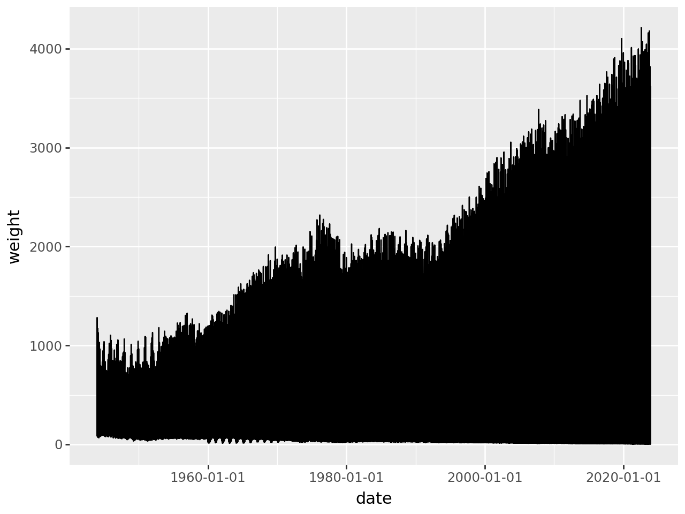
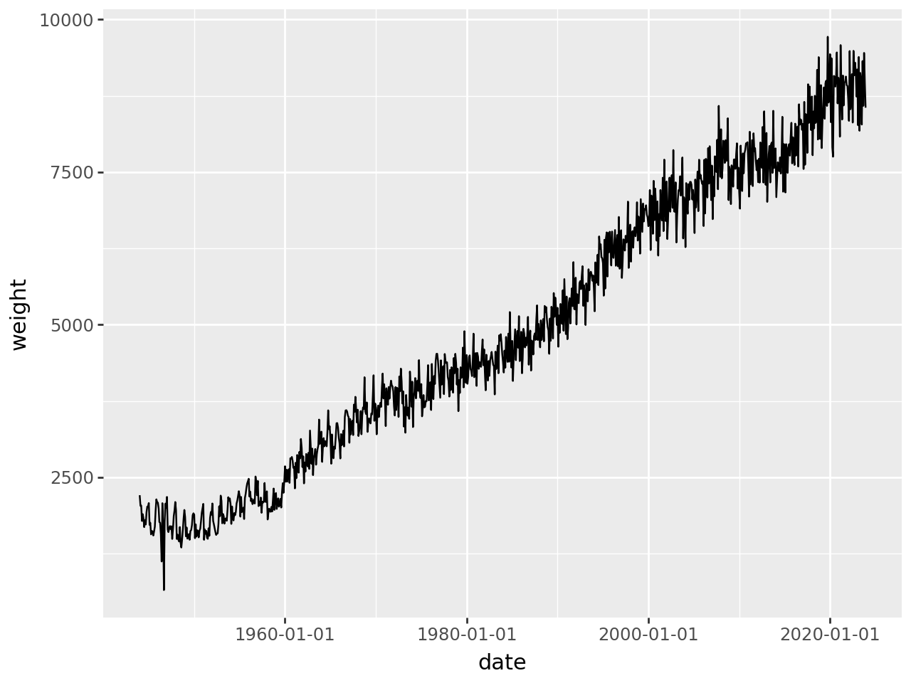
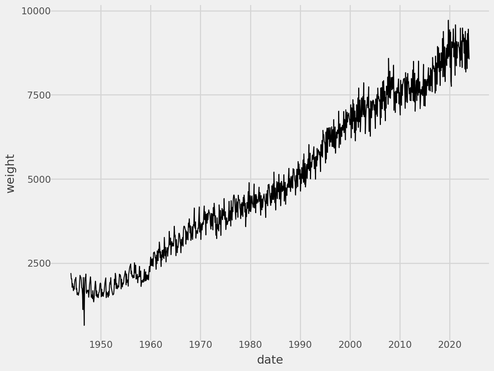
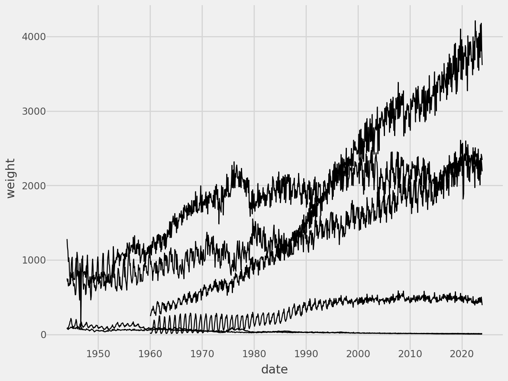
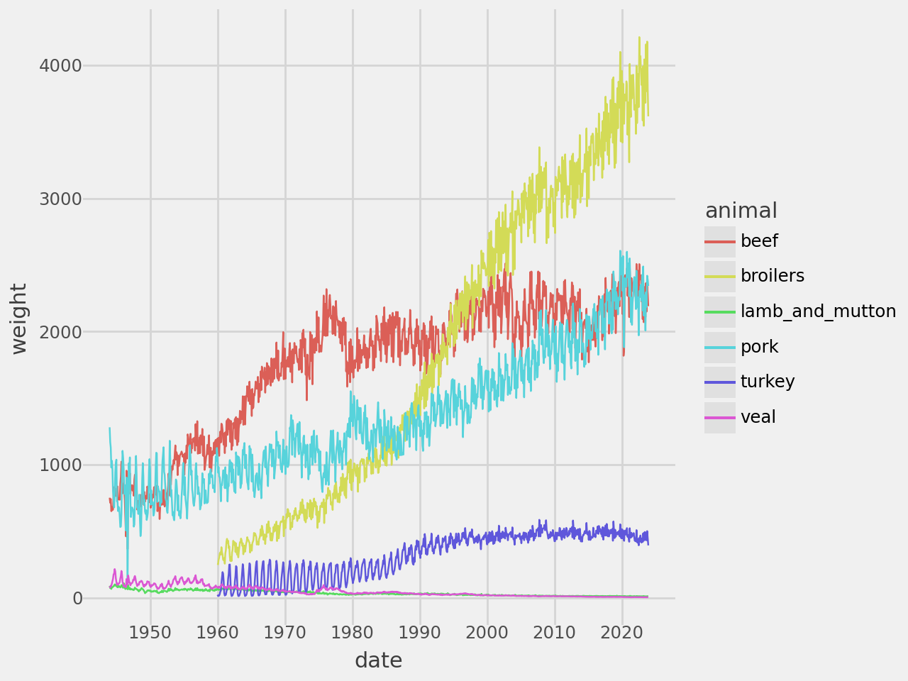
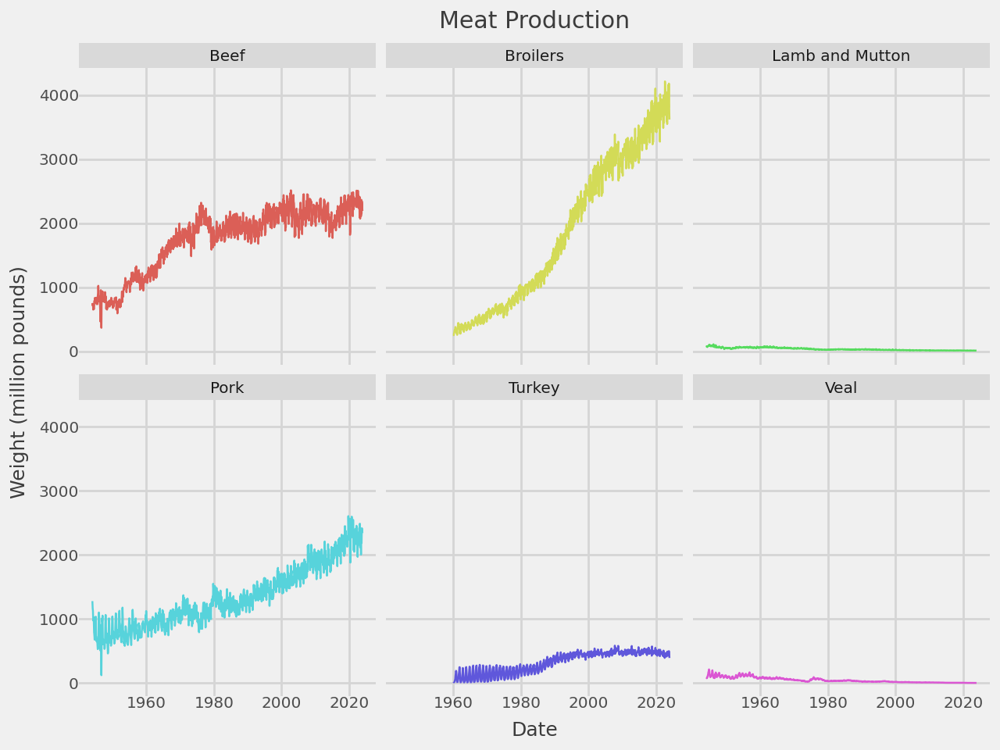

from plotnine import (
ggplot,
aes,
geom_line,
facet_wrap,
labs,
scale_x_datetime,
element_text,
theme_538
)
from plotnine.data import meatLine plots
In [1]:
geom_line() connects the dots, and is useful for time series data.
In [2]:
meat.head()| date | beef | veal | pork | lamb_and_mutton | broilers | other_chicken | turkey | |
|---|---|---|---|---|---|---|---|---|
| 0 | 1944-01-01 | 751.0 | 85.0 | 1280.0 | 89.0 | NaN | NaN | NaN |
| 1 | 1944-02-01 | 713.0 | 77.0 | 1169.0 | 72.0 | NaN | NaN | NaN |
| 2 | 1944-03-01 | 741.0 | 90.0 | 1128.0 | 75.0 | NaN | NaN | NaN |
| 3 | 1944-04-01 | 650.0 | 89.0 | 978.0 | 66.0 | NaN | NaN | NaN |
| 4 | 1944-05-01 | 681.0 | 106.0 | 1029.0 | 78.0 | NaN | NaN | NaN |
Make it tidy.
In [3]:
meat_long = meat.melt(
id_vars="date",
value_vars=["beef", "veal", "pork", "lamb_and_mutton", "broilers", "turkey"],
var_name="animal",
value_name="weight"
).dropna()
meat_long.head()| date | animal | weight | |
|---|---|---|---|
| 0 | 1944-01-01 | beef | 751.0 |
| 1 | 1944-02-01 | beef | 713.0 |
| 2 | 1944-03-01 | beef | 741.0 |
| 3 | 1944-04-01 | beef | 650.0 |
| 4 | 1944-05-01 | beef | 681.0 |
First try
In [4]:
p = (
ggplot(meat_long, aes(x="date", y="weight"))
+ geom_line()
)
p
It looks crowded because each there is more than one monthly entry at each x-point. We can get a single trend line by getting a monthly aggregate of the weights.
In [5]:
meat_long_monthly_agg = meat_long.groupby("date").agg({"weight": "sum"}).reset_index()
meat_long_monthly_agg| date | weight | |
|---|---|---|
| 0 | 1944-01-01 | 2205.0 |
| 1 | 1944-02-01 | 2031.0 |
| 2 | 1944-03-01 | 2034.0 |
| 3 | 1944-04-01 | 1783.0 |
| 4 | 1944-05-01 | 1894.0 |
| ... | ... | ... |
| 955 | 2023-08-01 | 9319.1 |
| 956 | 2023-09-01 | 8586.1 |
| 957 | 2023-10-01 | 9452.5 |
| 958 | 2023-11-01 | 8951.1 |
| 959 | 2023-12-01 | 8555.1 |
960 rows × 2 columns
A Single Trend Line
In [6]:
(
ggplot(meat_long_monthly_agg, aes(x="date", y="weight"))
+ geom_line()
)
Add some style
In [7]:
# Gallery, lines
(
ggplot(meat_long_monthly_agg, aes(x="date", y="weight"))
+ geom_line()
# Styling
+ scale_x_datetime(date_breaks="10 years", date_labels="%Y")
+ theme_538()
)
Or we can group by the animals to get a trend line for each animal
Multiple Trend Lines
In [8]:
(
ggplot(meat_long, aes(x="date", y="weight", group="animal"))
+ geom_line()
# Styling
+ scale_x_datetime(date_breaks="10 years", date_labels="%Y")
+ theme_538()
)
Make each group be a different color.
In [9]:
# Gallery, lines
(
ggplot(meat_long, aes(x="date", y="weight", color="animal"))
+ geom_line()
# Styling
+ scale_x_datetime(date_breaks="10 years", date_labels="%Y")
+ theme_538()
)
A Trend Line Per Facet
Plot each group on a separate panel. The legend is no longer required and we adjust to the smaller panels by reducing the size of the line, size of the text and the number of grid lines.
In [10]:
# Gallery, lines
def titled(strip_title):
return " ".join(s.title() if s != "and" else s for s in strip_title.split("_"))
(
ggplot(meat_long, aes("date", "weight", color="animal"))
+ geom_line(size=.5, show_legend=False)
+ facet_wrap("animal", labeller=titled)
+ scale_x_datetime(date_breaks="20 years", date_labels="%Y")
+ labs(
x="Date",
y="Weight (million pounds)",
title="Meat Production"
)
+ theme_538(base_size=9)
)